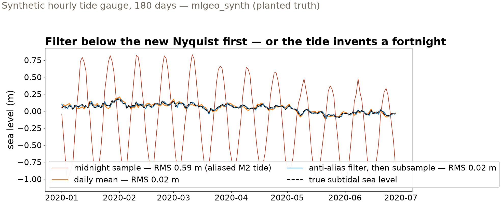
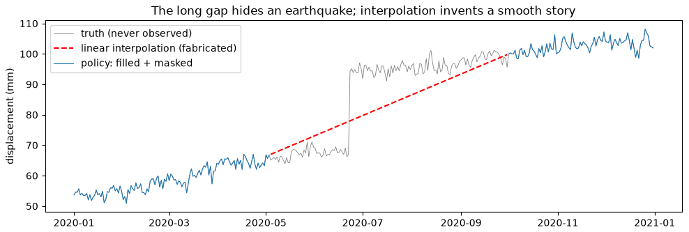
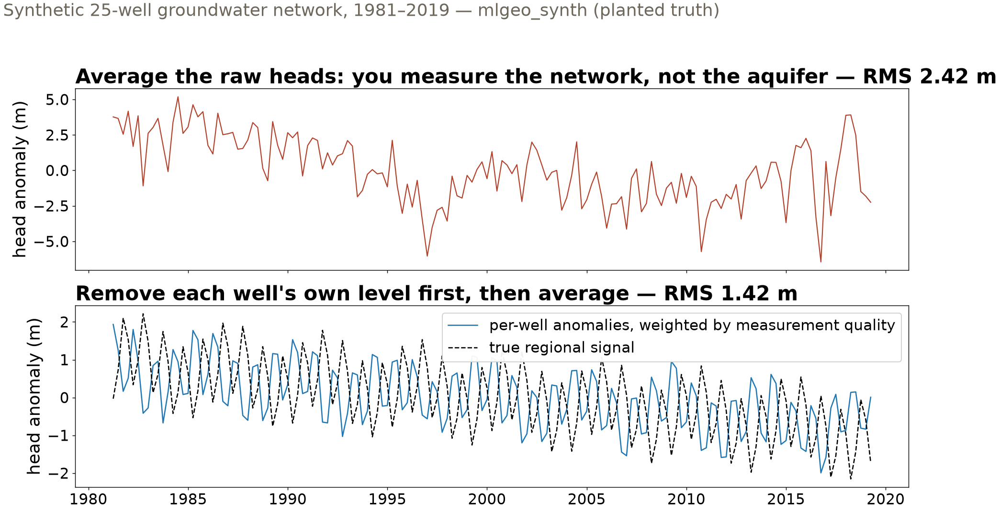

📖The playbook: a sampled series only represents frequencies below Nyquist — everything above folds back in disguise.
Shannon, C. E. (1949). Communication in the presence of noise. Proceedings of the IRE, 37, 10–21.
✗GPS velocity error bars computed as if the noise were white were several times too small — time correlation was the missing structure.
Mao, A., Harrison, C. G. A., & Dixon, T. H. (1999). Noise in GPS coordinate time series. Journal of Geophysical Research, 104, 2797–2816.
✓Doing it right: global temperature built from station anomalies, so stations joining and leaving the network cancel instead of jumping the mean.
Hansen, J., & Lebedeff, S. (1987). Global trends of measured surface air temperature. Journal of Geophysical Research, 92, 13345–13372.
📖The fix for correlated noise: resample contiguous blocks, not individual samples.
Künsch, H. R. (1989). The jackknife and the bootstrap for general stationary observations. The Annals of Statistics, 17, 1217–1241.
Sampling theory is old; geoscience still pays for ignoring it — in aliased tides, jumpy station averages, and error bars several times too small.
Arrays that know their coordinates
Geoscience arrays come with meaning attached: time, latitude, depth — not index 0, 1, 2
Labeled dimensions: ask for the grid cell nearest 47.6° N, 122.3° W — not for row 12
Reanalysis air temperature: 2,920 time steps × 25 × 53 grid — Seattle’s series is one labeled selection
Units, coordinates, and provenance travel with the array — the first requirement of AI-ready gridded data.
Keep one sample a day — and the tide invents a fortnight
0.59 m RMS error — keep each midnight reading
0.02 m RMS error — average the day first, then keep one value
The M2 tide (12.42-h period) lives above a daily series’ Nyquist frequency. Subsampled, it does not vanish — it folds into a 14.8-day oscillation at nearly full tidal amplitude.
Thirty times worse — and the artifact masquerades as a plausible fortnightly ocean signal.
Three ways to make a daily series

The daily mean — a humble 24-h average — already suppresses the tide; a proper anti-alias filter does slightly better. The midnight samples invent a half-meter oscillation that was never in the ocean.
Gaps: interpolation is a decision, not a default

Synthetic GNSS with planted truth (mlgeo_synth): a 150-day outage hides a 25 mm earthquake step — interpolation draws a confident straight ramp through it. Policy: fill gaps ≤ 10 days (error below the 2.4 mm noise), mask the rest.
The irregular stream: 25 wells, 40 years, no grid

Averaging raw heads jumps by meters whenever a well enters or leaves the record. Remove each well’s own level first, weight by measurement quality — and the true regional decline emerges: RMS 2.42 → 1.42 m.
Error bars for noise with memory
±0.019 mm/yr velocity uncertainty — resample individual days
GNSS noise is time-correlated. Resampling single days destroys that memory: the true velocity sat 8.6σ outside the narrow bar — and 1.1σ inside the honest one.
The wider error bar is the correct one. The narrow bar was not conservative — it was wrong, and only the planted truth exposed it.
One discipline, four streams
Data situation
The trap
The principle
Graded result
Hourly tide gauge → daily
aliasing: high frequencies fold, disguised
low-pass below the new Nyquist, then subsample
0.59 → 0.02 m RMS
Daily GNSS with outages
confident fabrication across gaps
fill what noise bounds, mask the rest, state the threshold
150-day gap hid a 25 mm step
Irregular multi-well network
the average tracks the network, not the field
anomalies first, weight by quality
2.42 → 1.42 m RMS
Trend in correlated noise
error bars that ignore memory
resample blocks, not samples
8.6σ → 1.1σ
Every resample is a claim about what happens between your samples. Make the claim explicitly — and grade it when you can.
Now run it yourself — open 2.6
pixi run jupyter lab → 2.6_resampling.ipynb, section 3 (Level 3)
Alias hunting: keep the noon sample instead of midnight — does the 14.8-day artifact move? Why not?
Gap policy: rerun with 3-day and 30-day thresholds; where would you set it for a station moving at 50 mm/yr?
Wells: drop the 1/σ² weights — how much improvement survives? Which move carried the load?